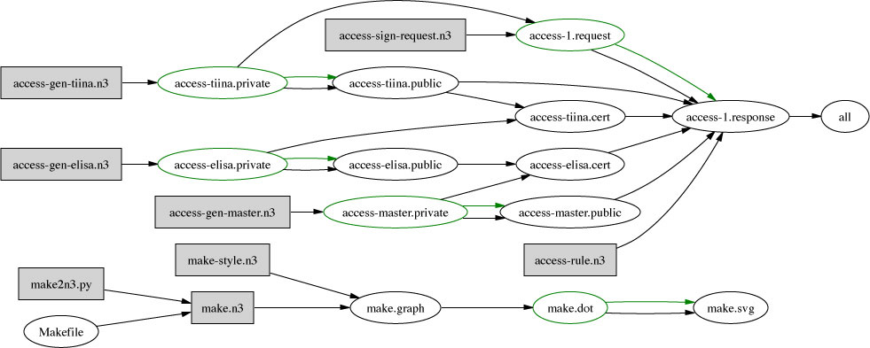

This example was inspired by, and roughly follows, Marja-Ritta's slide
in which access to a member area on the web site is granted to Tiina by authority delegated by Alan, in charge of the web site, to Kari. (This in turn was based on an example in the statement of work for Darpa DAML funding for MIT-LCS Semantic Web work) Public key tools are very flexible, and so one can make all kinds of system. Here is one. The key document is access-rule.n3, which defines the rule for access being allowed to the site. It defines what information is beleived and on what basis.

The other files are listed below. The Makefile describes how they used (diagram in SVG). The .n3 file extension is used only for source rule files. Files which are generated automatically are given other extensions, like .private, .public, .cert, .request, .response even though they are still all in n3.
This is a hand-made file. See also up-to-date listings in order of: Name Last modified Size Description
The makefile is the place to start
Parent Directory 14-May-2002 19:59 -
Makefile See how the files are built.
acc.n3 Schema for access control terms
{kind=link}